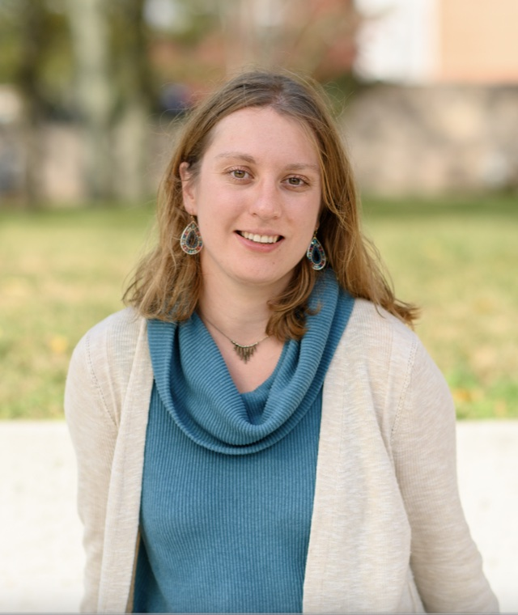

Associate Professor at the Mathematical Institute at the University of Oxford
Senior Research Fellow at New College Oxford
Randomized numerical linear algebra · high-dimensional probability · stochastic optimization · robust iterative methods · tensor methods
Papers & resources Google Scholar
CV (September 2026) · arXiv · elizaveta.rebrova@maths.ox.ac.uk
Last updated: 24 September 2026
September 2026
My research is in randomized numerical linear algebra and the mathematics of data science, with close connections to high-dimensional probability and stochastic optimization. I am interested in mathematically justified and effective randomized algorithms for large-scale data problems, especially in settings where the data or the problem has non-trivial mathematical structure, such as spectral decay, multimodality, nonnegativity, tensor structure, or structured noise.
I received my PhD in Mathematics from the University of Michigan in 2018, advised by Roman Vershynin. I then held postdoctoral positions at UCLA (2018–2020) and Lawrence Berkeley National Laboratory (2021). Before joining Oxford in 2026, I was an Assistant Professor in Operations Research and Financial Engineering at Princeton University (2021–2026), affiliated with the Program in Applied and Computational Mathematics and the Center for Statistics and Machine Learning.
My work has been previously supported by NSF DMS-2309685 and NSF DMS-2108479.
I also serve as an Associate Editor for Information and Inference: A Journal of the IMA.
Princeton University (2021–2026)
Probability and Stochastic Processes, Convex and Conic Optimization, Networks.
UCLA (2018–2020)
Probability, Statistics, Stochastic Processes, and Optimization.
University of Michigan (2013–2017)
Calculus and Differential Equations.
Earlier teaching
In Moscow: calculus at math school 57 and algebra at Kolmogorov math and physics high school.
My first name is the Russian version of Elizabeth. I like all versions of my name: please call me Liza, Lisa, Eliza, or Elizabeth, whatever you like the best. In case you were curious, Elizaveta is pronounced approximately as "Ye (like in yellow) - lee - zuh - VYE - tuh". Standard pronunciation of Liza is "LEE - zuh".
My non-mathy interests include things that I find beautiful or challenging, such as, good stories, arts, oceans, mountains and cities, also finding and making perfect coffee. I also immensely enjoy long conversations with my six-year-old son, currently fascinated by the Jedi, whose curious and very sharp logic is so fun to follow.
“Poirot,” I said. “I have been thinking.”
“An admirable exercise my friend. Continue
it.”
(Agatha Christie, Peril at End House)